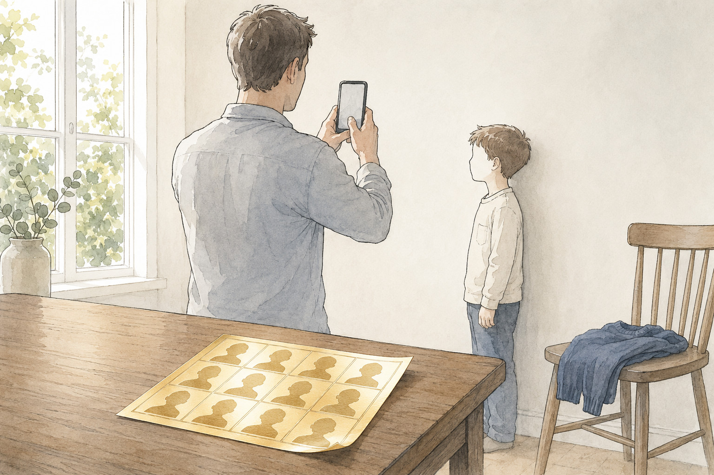
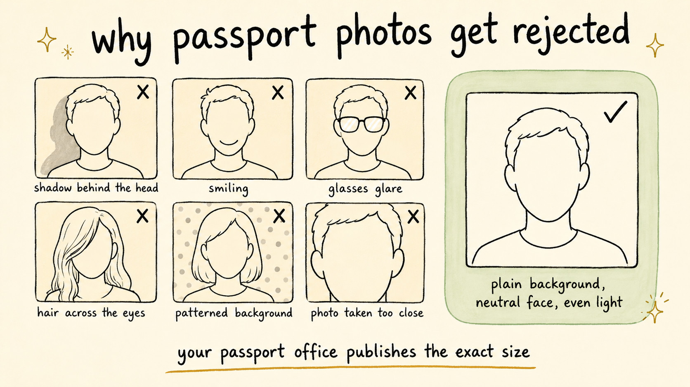

How to Take a Passport Photo at Home That Gets Accepted
Travel Document Vault

Key Takeaways
- Use a plain white or off-white background, neutral expression, and eyes open and looking straight ahead
- Size requirements differ from country to country and are enforced strictly, so take the measurements from your own passport authority rather than any summary
- Natural window light works best - avoid harsh shadows and avoid using camera flash
- Most countries now prohibit glasses unless medically necessary - check current requirements
- Common rejection reasons include shadows, wrong size, smiling, blurry photos, and improper backgrounds
A photo taken at home passes just as readily as one from a booth, provided it meets the same short list of rules. Most rejections come down to three things: shadow on the face or the background, the head being the wrong size in the frame, and glasses. Get those right and the rest is straightforward.
Universal Requirements Across Countries
Although specific rules vary by passport authority, most countries share core requirements for passport photos. Understanding these fundamentals will put you on solid ground regardless of which country issues your passport.
Background and Composition
You need a plain white or off-white background - nothing else works. No patterns, shadows, blurred backgrounds, or colours. The reasoning is straightforward: officials need a clean, uncluttered view of your face to compare against future documents. Most people use a white bedsheet, poster board, or even paint a small section of wall. The key is keeping it bright and uniform throughout.
Expression and Pose
Your face needs to fill the frame to the proportion your passport authority specifies, with eyes open and clearly visible - most countries prohibit smiling, and squinting will disqualify the shot. Look straight ahead at the camera with a neutral expression, tilting your head slightly if that feels more natural, but generally keeping your head square to the lens. Your ears should ideally be visible on both sides of your face.
Can You Wear Glasses in Your Passport Photo?
Most countries have moved away from allowing regular glasses in passport photos unless you wear them permanently for a medical reason. Even then, you may need to provide documentation or take a separate photo without glasses. Some nations still permit reading glasses if they are prescribed, but the lens must not create glare and your eyes must be clearly visible. Religious headgear is typically permitted as long as it does not obscure the facial features needed for identification.
Sunglasses and tinted lenses are refused everywhere, with no medical exemption. If you do qualify to keep your glasses on, angle your head slightly away from the light so the lenses carry no reflection, and check that the frames do not cross any part of your eyes.
Passport Photo Size: the Two Standards Most Countries Use
Most passport authorities use one of two printed sizes. The 35mm x 45mm format covers the UK, EU countries including the Netherlands, and much of the rest of the world. The US asks for a 2 x 2 inch square, and a handful of countries follow that standard instead.
Digital submissions swap millimetres for pixels, and every authority publishes its own minimums. Those two sizes are what most authorities currently ask for in print, but specifications get revised, so confirm yours before you print or upload.
Where to Check Your Country’s Size Requirements
Size is where most people stumble - if your photo doesn't match your country's requirements, rejection is almost certain. Every country sets its own, some in inches and some in millimetres, and they get revised from time to time.
We deliberately don't reprint those numbers here. A figure copied into a blog post is a figure that can quietly go out of date, and this post is not the authority on it. Check your own passport office directly.
| Country | Where to check the current requirements |
|---|---|
| United States | travel.state.gov passport photo requirements |
| United Kingdom | gov.uk photos for passports |
| Australia | Australian Passport Office photo guidance |
| Canada | Government of Canada passport photos |
Whatever your country specifies, it is exact - even a few millimetres off means rejection. Your smartphone's raw photo will typically be much larger than what you need to submit, which is why cropping apps exist. Free or low-cost tools like those available on iOS and Android let you input your country and automatically resize to the exact spec.
Photo Submission Methods Comparison
You have several options for getting your passport photo into the hands of the passport authority. Each has trade-offs in cost, convenience, and acceptance risk.
| Method | Cost | Acceptance Risk | Convenience | Official Guidance |
|---|---|---|---|---|
| At-home DIY (smartphone + crop app) | Free or close to it | Higher if you miss lighting or size specs | Very high - immediate | Permitted in most countries - check your authority's site |
| Local chemist or pharmacy | A modest fee | Low - trained professionals verify | Medium - same-day service typical | Widely used and generally reliable - check your own authority's photo requirements either way |
| Post Office (UK and others) | A modest fee | Low - taken in-house, checked | Medium - requires visit and appointment | Post Office official service |
| Online services (e.g. Passport Photo Online) | A modest fee | Medium - digital submission, feedback provided | High - from home, digital delivery | Not official but widely used - check if your country accepts pre-cropped uploads |
| Professional photography studio | The most expensive option | Low - expert lighting and composition | Low - requires appointment | Accepted everywhere - always a safe choice |
Lighting and Image Quality
Get the lighting wrong and rejection is nearly certain. Shadows across your face, uneven illumination, or blown-out areas around the face all disqualify the photo.
Best Lighting Practices
Window light is your best bet. Position yourself perpendicular to the window for even illumination across your face and to avoid harsh shadows under the eyes or along one side. Overcast days work particularly well because clouds diffuse the light evenly without the harshness of direct sun. Avoid shooting at midday in full sunlight, which tends to create unflattering shadows and makes you squint.
Never use your phone's camera flash. Flash tends to create harsh shadows, washes out skin tone, and often causes red-eye. If your room is dark, move closer to the window or choose a different time of day. Better to retake the photo in good light than to submit a flash-lit photo that gets rejected.
Use a tripod or prop your phone against a stable object so you have both hands free to position your face correctly. This also ensures the camera is level and focused on your face. If you must hold the phone, have someone else take the photo to avoid camera shake and uneven framing.
Resolution and Focus
Modern smartphones shoot at 12 megapixels or higher, which is plenty for passport photos. Before you shoot, make sure your phone is in focus mode - tap on your face on the screen, and most phones will lock focus there. Your final image should be sharp and clear.
Common Rejection Reasons and How to Avoid Them
- Shadows on the face: Caused by side lighting or harsh light sources. Position yourself perpendicular to a window for even illumination, and check that your ears and cheekbones are evenly lit.
- Incorrect photo dimensions: Photo does not match your country's specifications (requirements vary by country). Use a passport photo cropping app and double-check dimensions against your authority's official spec before printing or uploading - not another country's standards.
- Smiling or unusual expression: Most countries require a neutral expression. Practice a calm, straight-ahead look in a mirror beforehand - aim for serious, not stern.
- Glasses with glare: Glare on lenses obscures your eyes. Either remove your glasses or adjust the angle to eliminate reflection. Many countries now prohibit glasses entirely unless medically necessary, so check your authority's current rules first.
- Blurry or out-of-focus image: Motion or focus issues during capture. Use a tripod or stable object to prop your phone, tap the screen to focus on your face, and avoid any movement during the shot.
- Wrong background: Coloured background, pattern, or uneven white background. Plain white or off-white poster board or bedsheet works best - ensure no visible texture or shadows.
- Excessive head room or cropping: Face too small or positioned incorrectly in frame. Your country's rules will state exactly how much of the frame your face should fill, usually as a chin-to-crown measurement rather than a percentage - work to that figure, not to what looks right.

Travel Document Vault stores digital copies of your approved passport photos and tracks every document's expiry date - all on-device, fully offline. Keep your passport details organised and never miss a renewal deadline. Download on the App Store or Google Play.
From Smartphone to Official Photo: The Process
Your smartphone photo is rarely the right size straight away. After shooting, you'll need to crop it to your country's exact specifications, then decide whether to print it or upload it digitally.
Cropping Tools
Cropping apps take the guesswork out of resizing. Look for tools like Passport Photo Online or ID Photo Studio on iOS and Android - they let you select your country and automatically crop to spec whilst checking that your face dimensions are correct. Many apps go further by providing feedback if your lighting or background falls short.
Printing vs. Digital Submission
Some countries accept digital uploads of the biometric passport photo submitted online, while others still want a printed physical photo, so check your passport authority's current submission process before you take yours. If printing, use a professional photo printer or take your digital file to a pharmacy or print shop. Home inkjet printers typically produce acceptable results, but colour accuracy and paper quality matter. Photo paper is inexpensive and ensures better colour fidelity than standard printer paper.
Preparation Checklist
Before you take your photo, ensure you have the following in place:
- Plain white or off-white background material ready and positioned
- Good natural light source (preferably a window)
- Smartphone with a functioning camera
- Tripod or stable object to prop your phone
- Knowledge of your country's exact photo specifications
- A cropping app downloaded and ready to use
- Plan for printing or digital submission based on your country's requirements
A few minutes spent setting up properly now saves you from resubmitting later.
Before you rely on this: it's a blog, not an official source. Rules and details change, and your situation may be different. We check what we publish, and we can still be wrong or out of date. If something here matters to your plans, confirm it with the authority that handles it before you act.
Frequently Asked Questions
Can I take a passport photo on my smartphone
Yes, you can take a passport photo using a smartphone. Position yourself in front of a plain white or off-white background with good natural light, and ensure the photo meets your country's size and quality requirements. Many people then use a cropping app to resize the digital photo to official dimensions and either print it or upload it digitally depending on their country's submission process.
What size should a passport photo be
Most countries use one of two printed sizes: 35mm x 45mm, which covers the UK, the EU and much of the world, or the 2 x 2 inch square the US uses. Digital submissions have separate pixel minimums. Requirements are enforced strictly and get revised, so confirm the exact spec with your own passport authority before you print or upload.
Why was my passport photo rejected
Common rejection reasons include shadows on the face, incorrect size, smiling or unusual expressions, wearing glasses, blurry images, or improper background. Ensure your photo meets all official requirements before submission. Review the specific feedback from your passport authority and retake the photo addressing each issue mentioned.
Do I need special lighting for a passport photo
Natural light from a window is ideal for passport photos. Avoid harsh shadows on your face and do not use harsh camera flash. Position yourself facing the light source directly or perpendicular to a window so the light falls evenly across your face. Overcast days provide ideal diffused light without harsh shadows.
Can I wear glasses in a passport photo
Most countries now prohibit glasses in passport photos unless medically necessary. Even then, you may need to provide documentation. Check your country's current requirements before taking your photo, as rules have evolved in recent years. When in doubt, take both a photo with and without glasses to have options.
What are the rules for a passport photo?
The core rules are consistent across most countries: a plain light background, a neutral expression with your mouth closed, both eyes open and clearly visible, no glasses unless medically necessary, even lighting with no shadows, and a recent photo that meets your country's size spec. Each authority publishes its own full list and the details differ, so check yours before you shoot.